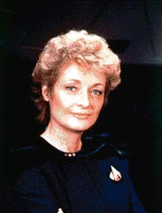
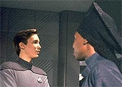
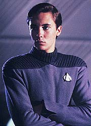
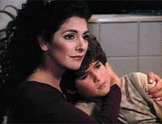

|
MANCHETE
DO EPISDIO
Estria
do segundo ano apresenta as
novidades em enredo pouco inspirado
Episdio
anterior | Prximo
episdio
Sinopse:
Data Estelar: 42073.1.
Uma praga atinge o sistema Rachelis, e a Enterprise enviada para
atender emergncia mdica. A misso transportar uma srie
de amostras de um vrus de uma estao de pesquisa da Federao
a um local onde um antdoto possa ser desenvolvido. Enquanto o novo
engenheiro-chefe da nave, Geordi La Forge, prepara um campo de
conteno para os vrus, a tripulao fica chocada ao descobrir
que a conselheira Troi est grvida.
 De acordo com a
Betazide, uma luz branca a engravidou enquanto ela dormia. A dra.
Katherine Pulaski, nova oficial mdica chefe da nave, confirma o
prognstico de Troi e relata que o feto ir se desenvolver
completamente em 36 horas. Desconhecendo a real origem ou inteno
desse ser, Picard coloca a tripulao em alerta de segurana.
Quando Troi d a luz a um menino, chamado Ian Andrew, a situao
parece totalmente no-ameaadora, embora todos se espantem com o
acelerado processo de crescimento do rapaz, que passa de beb a uma
criana de oito anos em apenas um dia.
Enquanto isso, Wesley relutantemente se prepara para deixar a
Enterprise e juntar-se a sua me, que deixou seu posto na nave para
se tornar chefe do corpo mdico da Frota. No fim das contas, Wes
decide permanecer na nave, aps receber encorajamento da nova
bartender do Bar Panormico (Ten-Forward), Guinan. Depois, quando o
rapaz discute suas intenes com Picard, o capito autoriza sua
permanncia, se sua me o permitir.
 Entretanto, uma ameaa
surge quando o sistema de conteno comea a falhar, por um
inesperado crescimento de uma das culturas de vrus. A razo
uma misteriosa fonte de radiao que ningum sabe qual .
Pulaski relata que, na taxa atual, a praga ir destruir toda a vida
a bordo da Enterprise em duas horas.
Por incrvel que parea, Ian a fonte da radiao. Quando o
menino percebe isso, ele decide sacrificar sua vida para salvar a
tripulao. Enquanto Troi chora pela perda de seu filho, Ian morre
e seu corpo volta a ter seu estado original --uma entidade brilhante
e branca que conta a Troi que Ian veio at ela para aprender mais
sobre os humanos, experimentando a vida entre eles. Assim que a
entidade deixa a nave, a ameaa evitada e a tripulao conclui
sua misso humanitria.
Comentrios:
Levando em conta
as circunstncias em que "The Child" foi
concebido, o resultado at bastante satisfatrio. No que seja
uma das melhores peas da temporada (muito ao contrrio, uma
das piores), mas ainda assim ele consegue apresentar audincia
os novos elementos do seriado, todos empacotados em uma histria
que at tinha potencial, mas acabou ficando muito frouxa para ser
interessante.
Entre as novidades, temos a nova mdica da Enterprise, Katherine
Pulaski. Com uma personalidade muito mais forte do que a antiga
doutora, Beverly Crusher, "Kate" daquelas que voc ama
ou odeia, logo de cara. Parece muito com um velho e conhecido mdico
de uma certa Enterprise. Ela chega nave como um contraponto para
Data, relembrando muito a relao entre McCoy e Spock nos tempos
da Srie Clssica. E, apesar do plgio, a tentativa em
geral bem-sucedida.
Geordi La Forge ganhou mais importncia nesta temporada, ao assumir
como o engenheiro-chefe da Enterprise. J no era sem tempo: a
situao da engenharia na temporada anterior estava vergonhosa. A
cada episdio havia um novo "engenheiro-chefe" tomando
conta de l. Com La Forge, finalmente as coisas se estabilizam,
dando inclusive novo flego ao personagem.
Finalmente, a audincia tambm ganhou um novo cenrio, o bar
panormico da Enterprise, conhecido como Ten-Forward (por estar no
Deck 10, na poro frontal da seo disco). Com ele, uma nova
personagem: a bartender Guinan, interpretada por Whoopi Goldberg.
Esbanjando talento, a atriz j traz novo brilho para a srie. A
sabedoria de sua personagem j se faz notar em um dilogo com
Wesley Crusher. As tiradas sensacionais de Guinan iriam se aperfeioar
ao longo dos episdios, passando a ser um dos pontos altos de
muitos deles. Em "The Child", sua apario se
resume a uma apresentao rpida de seu estilo, mas sem a afinao
que ela ganharia com o passar do tempo.
 Todos esses novos
elementos, junto com a deciso de Wesley de ficar a bordo, puderam
ser apresentados com destaque no episdio, o que sintomtico de
uma coisa: a histria principal no exigia muito tempo para ser
contada. De fato, o que se viu foi uma apresentao da nova
temporada que por coincidncia conta uma historinha enfocada em
Deanna Troi.
Embora ainda falte muito para que a tripulao atinja o grau de
interao e caracterizao que viria nos anos seguintes, j se
v aqui uma fluidez maior entre os personagens --efeito
provavelmente do reaproveitamento que foi feito do roteiro,
originalmente escrito para Kirk, McCoy e cia. a bordo da Enterprise
clssica para a srie "Jornada nas Estrelas - Fase
II", cancelada pouco antes do incio das filmagens.
No incio da segunda temporada da Nova Gerao, uma greve
de roteiristas assolava Hollywood. Por isso, os produtores foram
obrigados a reciclar antigos roteiros da "Fase II"
e convert-los em episdios da nova srie. "The Child"
foi o primeiro deles, e v-se claramente que o tratamento especial
dado aos personagens fruto da boa caracterizao da turma da srie
original. O conflito entre Data e Pulaski, por exemplo, deve ter sado
quase que literalmente de um debate entre McCoy e Xon, o
primeiro-oficial Vulcano da "Fase II" (Spock no
estava a bordo). Assim tambm o paralelo entre Ilia e Decker (em
"Fase II") e Riker e Troi (na Nova Gerao),
facilitando a adaptao do roteiro.
Do ponto de vista do contedo, o episdio bastante direto. No
h muito a refletir sobre ele, ou sobre as intenes do aliengena
ou o comportamento da tripulao diante dele. Uma passagem
interessante, entretanto, discute a filosofia do sculo 24 nas
entrelinhas. Durante a reunio, Picard e seus oficiais discutem a
possibilidade de um aborto. Troi intervm e diz que vai ter a criana
de qualquer jeito. O capito d a discusso por encerrado.
Se ficarmos na superfcie, tendemos a crer que a srie est
fazendo uma sutil campanha contra o aborto. Entretanto, uma anlise
mais profunda mostra justamente o contrrio. Os oficiais seniores
da Enterprise no acharam nem um pouco polmica ou controversa a
possibilidade de um aborto, mostrando que a mente dos humanos est
muito mais aberta a esse tipo de prtica no sculo 24 do que
atualmente. Pode no ser uma viso muito romntica, mas reflete
muito o atual caminho sendo trilhado pela cincia, que a cada dia
empurra mais as barreiras ticas, conquistando o direito de
realizar experimentos com embries humanos e facilitando a prtica
do aborto. Se isso levar a um "Admirvel Mundo Novo",
nos moldes de Aldous Huxley, uma outra discusso. O fato
importante agora que, naquele trecho de "The Child",
Jornada nas Estrelas refletiu uma tendncia que se faria
ainda mais forte nos anos que se seguiriam.
 Em termos
visuais, temos algumas tomadas arrojadas e interessantes, fruto de
uma direo inovadora de Rob Bowman. Ele usa ngulos diferentes
para filmar a ao na ponte, assim como uma tomada interessante
que mostra o ponto de vista da criatura de luz vagando pelos
corredores da Enterprise. Belas cenas, sem sombra de dvida.
Mesmo com todas essas qualidades, tcnicas e criativas, nada
capaz de esconder a fraca histria e o enredo arrastado do episdio.
Uma abertura de temporada at eficiente, mas nem um pouco
inspiradora.
Citaes:
Picard -
"Counselor Deanna Troi is pregnant. She... she is going to have
a baby."
("A conselheira Deanna Troi est grvida. Ela... ela vai ter
um beb.")
Riker - "A baby? ...This is a surprise."
("Um beb? ...Isso uma surpresa.")
Troi - "More so for me."
("Mais ainda para mim.")
Riker - "I don't mean to be indelicate, but who's the
father?"
("No quero ser indelicado, mas quem o pai?")
Pulaski - "Da-ta, look at this."
("Deita, olhe isso.")
Data - "'Deita'."
("Data.")
Pulaski - "What?"
("O qu?")
Data - "My name, it is pronounced 'Deita'."
("Meu nome, pronuncia-se 'Data'.")
Pulaski - "Oh?"
("Oh?")
Data - "You called me Da-ta."
("Voc me chamou de Deita.")
Pulaski - "What's the difference?"
("Qual a diferena?")
Data - "One is my name, the other is not."
("Um o meu nome, o outro no.")
Trivia:
 Estria de Whoopi Goldberg como Guinan. Whoopi participaria de 24
episdios at o final da srie, e ainda seria vista no filme para
cinema "Jornada nas Estrelas - Generations". O
verdadeiro nome de Whoopi Caryn Elaine Johnson. Nascida em Nova
York em 13/11/1955, Whoopi sempre foi f da Srie Clssica,
mais notadamente da personagem de Nichelle Nichols, Uhura.
Estria de Whoopi Goldberg como Guinan. Whoopi participaria de 24
episdios at o final da srie, e ainda seria vista no filme para
cinema "Jornada nas Estrelas - Generations". O
verdadeiro nome de Whoopi Caryn Elaine Johnson. Nascida em Nova
York em 13/11/1955, Whoopi sempre foi f da Srie Clssica,
mais notadamente da personagem de Nichelle Nichols, Uhura.
Estria de Diana Muldaur como a nova oficial mdica da Enterprise,
dra. Kate Pulaski. Diana participou apenas desta temporada da srie.
Gates McFadden voltou como a dra. Beverly Crusher na temporada
seguinte. Diana Muldaur nasceu em Nova York, em 19/08/1938 e j
havia participado de dois episdios da Srie Clssica: "Return
to Tomorrow", como a Dr. Anne Mulhall, e "Is There
in Truth No Beauty?", como a dra. Miranda Jones.
Curiosamente, Muldaur nunca foi creditada como uma atriz regular em A
Nova Gerao, embora de fato o fosse. Por opo da atriz,
foi usado o crdito de "convidada especial".
A partir deste episdio, Geordi La Forge promovido a
engenheiro-chefe da Enterprise.
Durante a greve dos roteiristas de Hollywood, que durou seis meses
em 1988 (desde a primavera at o vero americano), "The
Child" foi escolhido entre muitos roteiros no utilizados
para a srie de Jornada da dcada de 70 que nunca aconteceu, "Jornada
nas Estrelas - Fase II". O roteiro, que originalmente
mostrava Ilia ("Jornada nas Estrelas - O Filme") grvida,
foi reescrito para se encaixar na Nova Gerao.
O diretor deste episdio, Rob Bowman, teve permisso dos
produtores para filmar a abertura do episdio de uma maneira
diferente, utilizando cmeras e equipamentos extras.
O episdio d a entender que o nome do pai de Deanna Troi Ian.
No episdio da stima temporada, "Dark Page",
confirmado que o nome do pai de Troi e ex-marido de Lwaxana era Ian
Andrew.
No episdio citada a estrela Epsilon Indi. Essa estrela tambm
foi citada na Srie Clssica, no episdio "And the
Children Shall Lead".
Ficha
tcnica:
Escrito por Jaron Summers
& Jon Povill (roteiro original para "Fase II")
e Maurice Hurley
Direo de Robert Bowman
Exibido em 21/11/1988
Produo: 027
Elenco:
Patrick Stewart como
Jean-Luc Picard
Jonathan Frakes como William Thomas Riker
Brent Spiner como Data
LeVar Burton como Geordi La Forge
Michael Dorn como Worf
Marina Sirtis como Deanna Troi
Wil Wheaton como Wesley Crusher
Elenco convidado:
Diana Muldaur como
Katherine "Kate" Pulaski
Whoopi Goldberg como Guinan
Seymour Cassel como tenente-comandante Hester Dealt
R.J. Williams como Ian Andrew Troi
Colm Meaney como Miles Edward O'Brien
Dawn Arnemann como sra. Gladstone
Zachary Benjamin como o jovem Ian
Dore Keller como alferes da engenharia
Episdio
anterior | Prximo
episdio
|